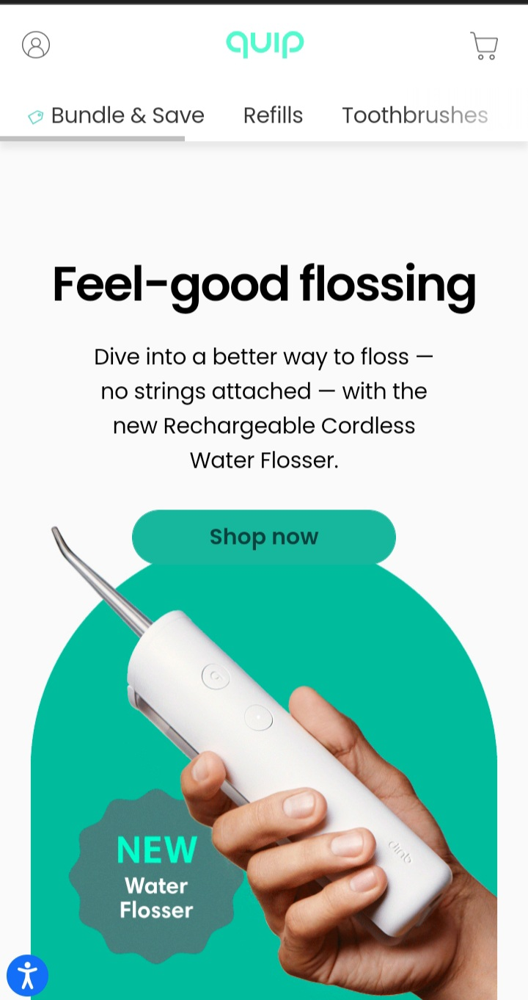
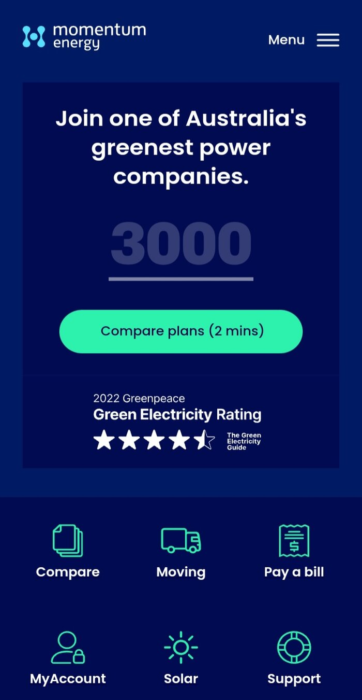

White space and clean design
Quip
getquip.com They have used white space so well to grasp the attention of users. Similarly, the design looks nice and appealing to the eyes.
Alignment
Momentum Energy
momentumenergy.com The website is well aligned and arranged horisontally and vertically The Icons are well spaced and alinged which makes the website user friendly and appealing
Contrast
Square Space
squarespace.comThe website has used colors that marry each other hnec blending so well. The contast make the wesite appealing to user and can easily be navigated. It is simple and vsually appealing.